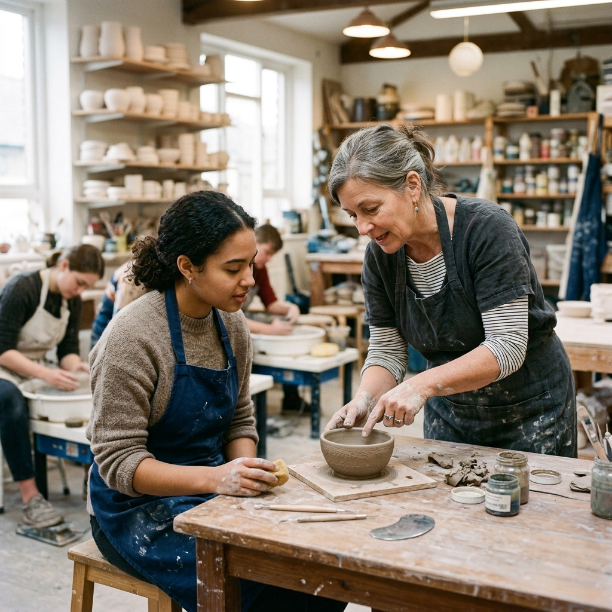

.jpeg)
Priya Nair
Wheel throwing Trimming
Former production potter; teaches rhythm, posture, and repeatable forms for beginners.
Teaches: Wheel Foundations, Lidded Forms
Patient teachers with deep studio practice — wheel, hand building, glazing, and beyond.
Our faculty mixes working artists and dedicated educators. Everyone on the floor teaches from live studio experience — not just demos on video — so you get real-time adjustments, honest critique, and encouragement when a form collapses (it happens to all of us).
We host two visiting artist residencies each year: one focused on surface and glaze, one on large-scale building. Residents offer weekend intensives open to members first, then the public. Ask at the desk for the current calendar.
Wheel throwing Trimming
Former production potter; teaches rhythm, posture, and repeatable forms for beginners.
Teaches: Wheel Foundations, Lidded Forms

Hand building Sculpture
Builds playful surfaces and large-scale pieces — guides you from sketch to structure.
Teaches: Hand Building, Sculptural Sketch

Glazing Surfaces
Tests glazes weekly; helps you plan firings that match your clay body and goals.
Teaches: Glaze Surfaces, Teens Clay Lab
.jpeg)
Community Kiln
Studio technician and educator — keeps firings safe and teaches loading best practices.
Teaches: Kiln Lab, Open Studio
We sequence lessons so your hands catch up to your eyes. Expect repetition, short demos, and one-on-one wheel time every session.
Adaptations for wrist or shoulder limits, standing or seated wheels, and quiet zones during open studios. Tell us what you need when you book.

Fridays 17:00–19:00. Open to all for quick questions regarding glazes, firing outcomes, or technique tweaks. No appointment needed.
Last Sunday of each month. A constructive room to share work-in-progress and get direct feedback from faculty. Sign up in the portal.
Available for Master Potter members. Twice per quarter, sit down for a 30-minute private review of your conceptual and technical growth.